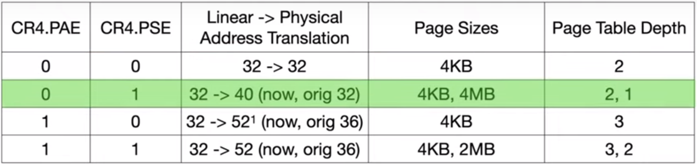

CR4.PSE = 1 (Page Size Extension)
OS may use 4MB pages at a depth of 1 insted of 4KB at a depth of 2.
Prior to 2020, only 10 bits are taken from the entry to point at the 4MB aligend page.
But it was extended to a 40 bit address space.

After 2020, 40 bit address space: